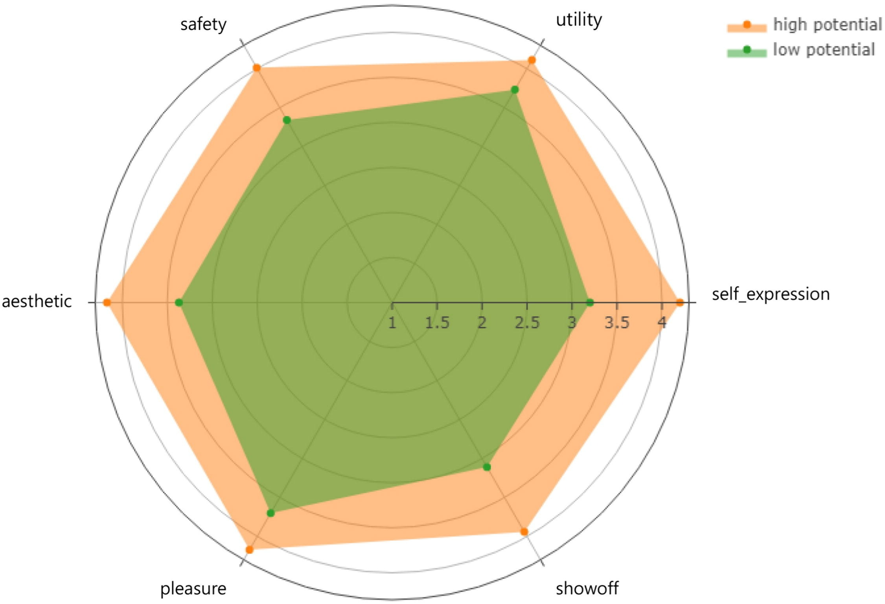
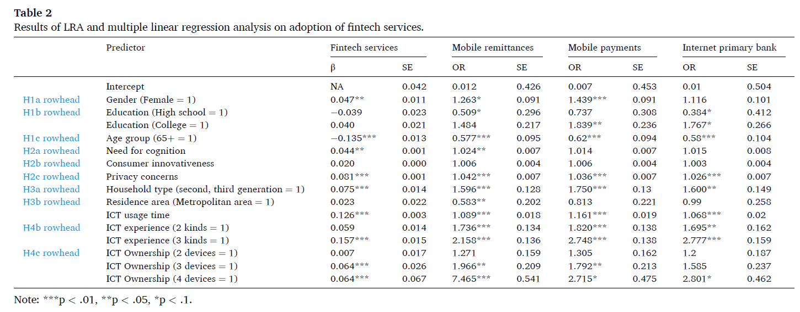
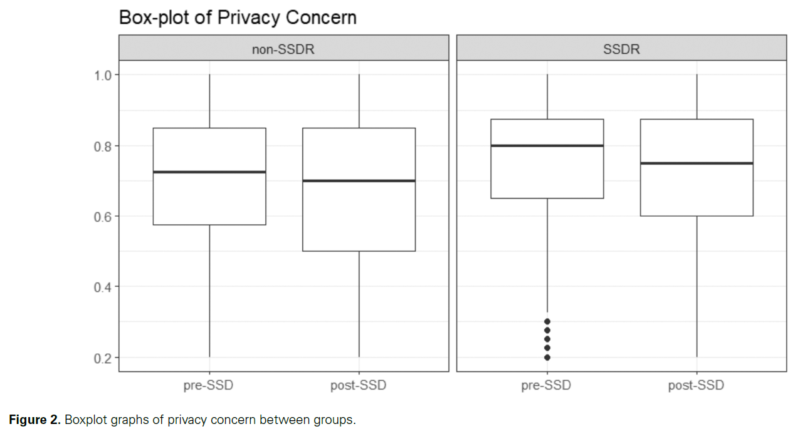
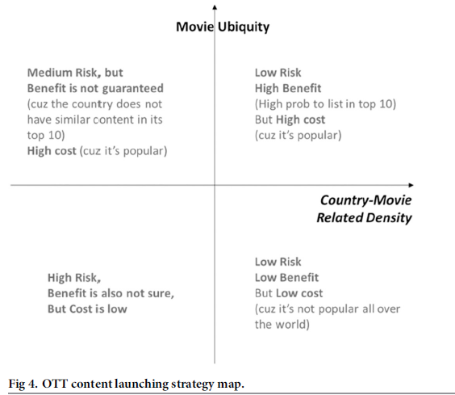
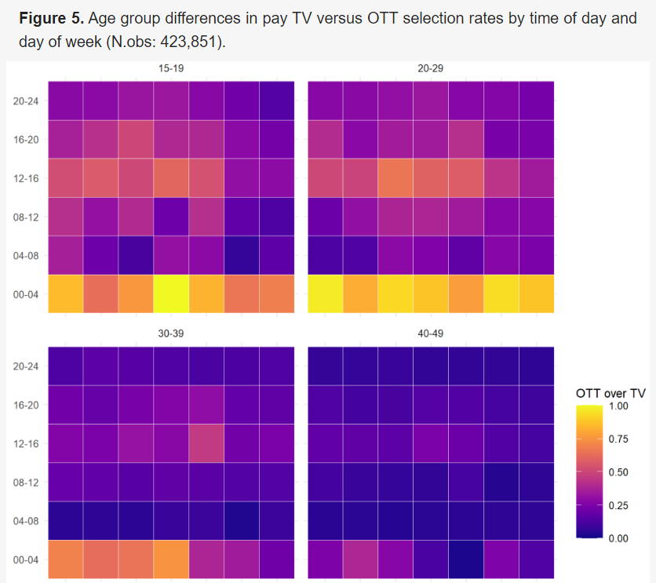
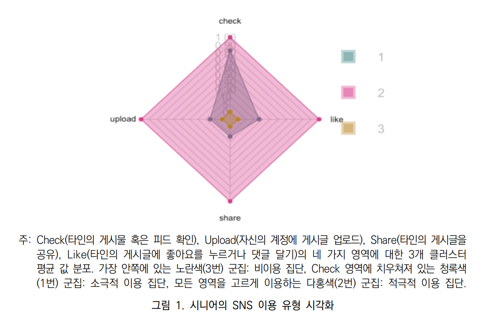
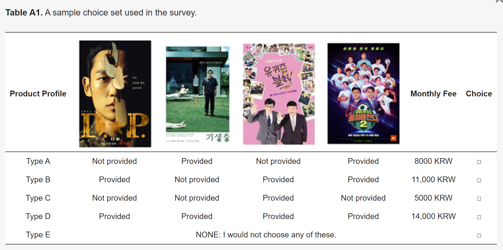
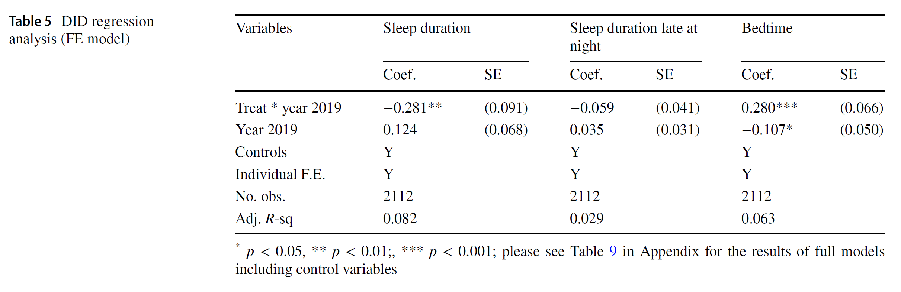
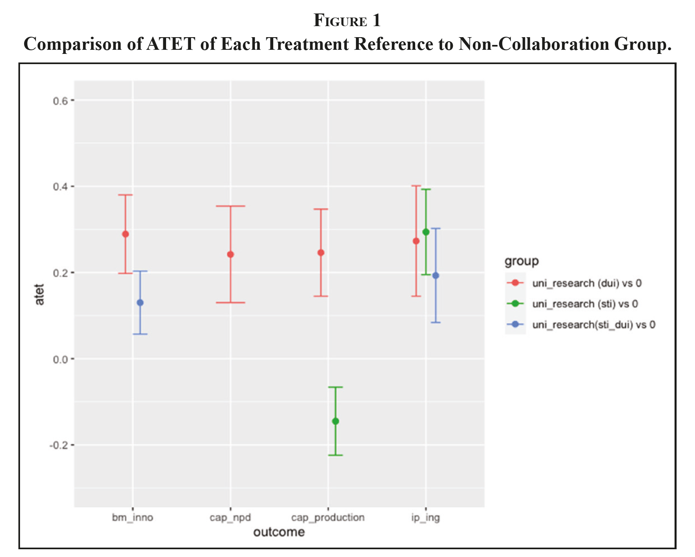

CJL & Lab
About
Courses
All Courses
ML101
STAT101
IMCT
Research
Publications
Work in progress
Proj
Blogs
LAB
Published works

Predicting wearable IoT Adoption: Identifying core consumers
through Machine learning algorithms
Yunwoo Choi, Changjun Lee*, Sangpil Han
2024-08
2024-08
Telematics and Informatics

Exploring drivers of fintech adoption among elderly consumers
Yunwoo Choi, Sangpil Han, Changjun Lee*
2024-08
2024-08
Technology in Society

Exploring the interplay between social distancing, innovation adoption, and privacy concerns
amid the COVID-19 crisis
Keungoui Kim, Sira Maliphol, Dongnyok Shim, Changjun Lee*
2024-07
2024-07
Science and Public Policy

Strategies for launching streaming content
Assessing movie-country relatedness and its impact on international popularity
Changjun Lee, Sung Wook Ji*
2024-06
2024-06
PLOS ONE

Time-of-Day and Day-of-Week Effects on TV and OTT Media Choices
Evidence from South Korea
Yun-Woo Choi, Changjun Lee*
2024-01
2024-01
Journal of Theoretical and Applied Electronic Commerce Research

시니어의 심리적 요인과 가구구성형태가 적극적인 SNS 이용에 미치는 영향
자아 존중감, 인지 욕구, 가구구성형태를 중심으로
박지은 , 이승경 , 이창준*
2023-12
2023-12
정보사회와미디어
The Effects of Popularity Metrics in News Comments on the Formation of Public Opinion
Evidence from an Internet Portal Site
Inyoung Park, Hyungbo Shim, Jang Hyun Kim, Changjun Lee, Daeho Lee*
2023-10
2020-06
The Social Science Journal
Changes in regional knowledge bases and its effect on local labour markets in the midst of transition
Evidence from France over 1985–2015
Keungoui Kim, Dieter F. Kogler, Changjun Lee, Taewon Kang*
2023-09
2022-05
Applied Spatial Analysis and Policy

The Return of the King:
The Importance of Killer Content in a Competitive OTT Market
Jongwha Kim, Changjun Lee*
2023-05
2023-05
Journal of Theoretical and Applied Electronic Commerce Research

The effect of watching OTT late at night on the sleep pattern of users
Changjun Lee, Cheongho Na, Keoungoui Kim*
2023-05
2023-05
Sleep and Biological Rhythms

The Optimal Open Innovation Strategy with Science-based Partners for Venture Firm’s Innovation Capabilities
Focusing on Innovation Modes
Cheongho Na, Changjun Lee, Eungdo Kim*
2023-04
2023-04
Science, Technology and Society
Regional knowledge spaces: the interplay of entry-relatedness and entry-potential for technological change and growth
Dieter F. Kogler, Ronald B. Davies, Changjun Lee, Keungoui Kim*
2023-04
2022-03
The Journal of Technology Transfer
Which innovation type is better for production efficiency?
A comparison between product/service, process, organizational, and marketing innovations using stochastic frontier and meta-frontier analysis
Keungoui Kim, Junmin Lee, Changjun Lee*
2023-03
2021-08
Technology Analysis & Strategic Management
An Analysis of Factors Influencing the Intention to Use Untact Services by Service Type
Hyunsuk Liu, Changjun Lee, Keungoui Kim, Junmin Lee, Ahram Moon, Daeho Lee, Myeongjun Park*
2023-02
2023-02
Sustainability
중국의 애국주의와 한류 팬덤 간의 사이버 갈등
BTS 리더 RM의 ‘밴 플리트 상’ 수상소감 관련 온라인 댓글 분석을 중심으로
염자몽 , 이승경 , 이창준*
2022-12
2022-12
사이버커뮤니케이션학보
비대면 상황에서의 온라인 커뮤니티 활동이 삶 만족도에 미치는 영향
코로나19 이전(2017년)과 이후(2021년) 비교를 중심으로
최미연 , 이창준*
2022-12
2022-12
정보사회와미디어
Technology network structure conditions the economic resilience of regions
Gergő Tóth, Zoltán Elekes, Adam Whittle, Changjun Lee*, Dieter F. Kogler
2022-12
2022-03
Economic Geography
Analysis of OTT Users’ Watching Behavior for Identifying a Profitable Niche
Latent Class Regression Approach
Dongnyok Shim, Changjun Lee, Inha Oh*
2022-11
2022-11
Journal of Theoretical and Applied Electronic Commerce Research
The effects of regional capacity in knowledge recombination on production efficiency
Changjun Lee, Hyunha Shin, Keungoui Kim, Dieter F. Kogler
2022-07
2022-04
Technological Forecasting and Social Change
Inward or Outward? Direction of Knowledge Flow and Firm Efficiency
A meta-frontier analysis
Minjung Shon, Daeho Lee, Changjun Lee*
2022-06
2022-06
International Journal of Technology Management
Internet of Things Technology: Balancing Privacy Concerns with Convenience
Hyesoo Jeon, Changjun Lee*
2022-05
2022-04
Telematics and Informatics
Effective strategies to attract crowdfunding investment based on the novelty of business ideas
Eunjun Jung, Changjun Lee*, Junseok Hwang
2022-05
2022-02
Technological Forecasting and Social Change
산업별 디지털 전환 갈등 지표 개발 연구
강송희 , 서영희 , 이창준*
2022-04
2022-04
정보사회와미디어
Changes in consumption patterns during the COVID-19 pandemic
Analyzing the revenge spending motivations of different emotional groups
Inyoung Park, Jieun Lee, Daeho Lee, Changjun Lee, Won Young Chung*
2022-03
2021-12
Journal of Retailing and Consumer Services
Estimating cost of fighting against fake news during catastrophic situations
Hanseul Jo, Soyeong Park, Dongcheol Shin, Jungwoo Shin*, Changjun Lee
2022-01
2021-11
Telematics and Informatics
Technological Knowledge Space and the Resilience of European Regions
Silvia Rocchetta*, Andrea Mina, Changjun Lee, Dieter F. Kogler
2022-01
2021-05
Journal of Economic Geography
효율적인 기술 정책 제안을 위한 한국 인공지능 지식 구조와 진화 궤적의 탐색적 분석
김경외 , 이준민 , 이창준*
2021-09
2021-08
한국혁신학회지
The mechanism of innovation spill-over across sub-layers in the ICT industry
Changjun Lee, Hosoo Cho, Daeho Lee*
2021-09
2020-07
Asian Journal of Technology Innovation
The nature of ICT in technology convergence
A knowledge-based network analysis
Sungdo Jung, Keungoui Kim, Changjun Lee*
2021-07
2021-07
PLOS ONE
재난상황에서의 가짜뉴스 식별: 영상 vs 문자
조한슬 , 오명진 , 신정우 , 이창준
2021-06
2021-06
사이버커뮤니케이션학보
미국 ICT기업의 국제특허분류 공동출현 네트워크 특성에 관한 연구
기술유사성과 기술응용성을 중심으로
노태우 , 조길수 , 이창준*
2021-05
2021-05
한국혁신학회지
Strategic Groups Emerged by Selecting R&D Collaboration Partners and Firms’ Efficiency
Chungho Na, Daeho Lee, Junseok Hwang, Changjun Lee*
2021-03
2020-07
Asian Journal of Technology Innovation
Effect of efficient triple-helix collaboration on organizations
based on their stage of growth
Changjun Lee, Daeho Lee, Minjung Shon*
2020-11
2020-11
Journal of Engineering and Technology Management
TV홈쇼핑 이용자의 상품구매 입문 요인 분석
랜덤포레스트 분석을 활용한 개인의 미디어 레퍼토리 데이터를 중심으로
이창준* , 우형진 , 박성복
2020-05
2020-05
한국혁신학회지
Development of Information Communication Technology Industry and Public Policy in South Korea
Public Administration and Public Policy in Korea
Changjun Lee*, Yooil Bae
2019-10
2019-10
Springer
Capturing Information on Technology Convergence, International Collaboration, and Knowledge Flow from Patent Document
A Case of Information and Communication Technology
Changjun Lee, Dieter F. Kogler, Daeho Lee*
2019-05
2018-09
Information Processing & Management
Does Working Long Hours Cause Marital Dissolution?
Evidence from the Reduction in South Korea’s Workweek Standard
Erin Hye-Won Kim*, Changjun Lee
2019-03
2019-01
Asian Population Studies
The Effect of Adult Children’s Working Hours on Visits to Elderly Parents
A Natural Experiment in Korea
Erin Hye-Won Kim*, Changjun Lee, Young Kyung Do
2019-02
2018-08
Population Research and Policy Review
The Effect of a Reduced Statutory Workweek on Familial Long-Term Care in Korea
Erin Hye-Won Kim*, Changjun Lee, Young Kyung Do
2018-12
2018-09
Journal of Aging and Health
The influence of giant platform on content diversity
Changjun Lee*, Junseok Hwang
2018-10
2016-12
Technological Forecasting and Social Change
Research on the Mutual Relations between ISP and ASP Efficiency Changes
for the Sustainable Growth of Internet Industry
Ho Seoung Na, Daeho Lee, Junseok Hwang, Changjun Lee*
2018-08
2017-07
Applied Economics
The Evolutionary Trajectory of ICT Ecosystem
A Network Analysis based on Media User Data
Changjun Lee, Hongbum Kim*
2018-07
2018-03
Information & Management
Does Social Media Use Really Make People Politically Polarized?
Direct and Indirect Effects of Social Media Use on Political Polarization
Changjun Lee, Jieun Shin, Ahreum Hong*
2018-01
2017-09
Telematics and Informatics
Ex-post evaluation of illegalizing juvenile online game after midnight
A case of shutdown policy in South Korea
Changjun Lee, Hongbum Kim, Ahreum Hong*
2017-11
2017-07
Telematics and Informatics
Effect of a Policy Intervention on Handset Subsidies on the Intention to Change Handsets
and Households’ Expenses in Mobile Telecommunications
Changjun Lee, Sungdo Jung, Keungoui Kim*
2017-11
2017-06
Telematics and Informatics
Intra-industry innovation, spillovers, and industry evolution
Evidence from the Korean ICT industry
Changjun Lee, Jang Hyun Kim, Daeho Lee*
2017-11
2017-06
Telematics and Informatics
Mobile Healthcare Applications and Gamification for Sustained Health Maintenance
Changjun Lee, Kyoungsun Lee, Daeho Lee*
2017-05
2017-05
Sustainability
효과적인 정보 확산을 위한 미디어 이용 패턴 분석
온라인 의견지도자의 미디어 레퍼토리를 중심으로
김명규 , 이창준 , 홍아름*
2016-04
2016-04
정보사회와미디어
Platform Openness and the Productivity of Content Providers
A meta-frontier analysis
Changjun Lee, Daeho Lee*, Junseok Hwang
2015-09
2014-08
Telecommunications Policy
No matching items